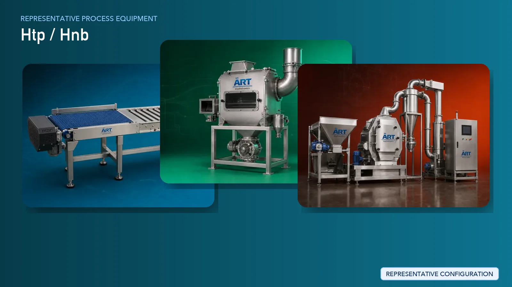

HTP (Heated Tobacco Product) / Heat-Not-Burn Manufacturing Plant & Machinery Solutions
Heated Tobacco Products (HTP), also known as Heat-Not-Burn (HNB) products, represent a rapidly growing segment in the global tobacco industry. These products require precise tobacco processing, uniform material preparation, controlled density, and high-precision stick formation to ensure consistent performance.

About Htp / Hnb processing
ART Mechatronics provides advanced machinery and turnkey solutions for HTP manufacturing plants, covering tobacco preparation, fine cutting, conditioning, blending, and integration with stick forming and packaging systems. Our solutions are engineered for precision, consistency, and scalable high-speed production.
Complete Htp / Hnb Process Flow
Tobacco is received and transferred into the processing system.
Ensures controlled and continuous material flow.
Tobacco is cleaned to remove impurities and fine dust.
Ensures product purity and protects precision equipment.
Tobacco is conditioned to achieve precise moisture levels required for reconstitution and stick formation.
Ensures flexibility and consistency.
Tobacco is processed into fine particles suitable for reconstituted tobacco sheets or stick filling.
Critical for uniform density and performance.
Tobacco is blended with additives, binders, and flavoring agents.
Ensures homogeneous formulation.
Processed tobacco may be reconstituted into sheets or prepared for stick formation.
Enables controlled structure and consistency.
Prepared tobacco material is formed into sticks suitable for HNB devices.
Ensures:
- Uniform density
- Consistent dimensions
- High-speed production
Formed sticks are dried and stabilized to maintain structural integrity and moisture balance.
Finished sticks are packed into cartons or packs.
Suitable for retail-ready packaging.
Fine particles and dust must be controlled for precision manufacturing. Systems Used:
Ensures:
- Clean production environment
- Equipment protection
- Product consistency
Machinery Required for Htp / Hnb Plant
- Material Handling Systems
- Pre Cleaner
- Air Classifier
- Cyclone Separator
- Conditioning System
- Fine Cutting / Grinding System
- Blending Equipment
- Reconstitution / Sheet Preparation System
- Stick Forming Machine
- Dryer
- Precision Cutting System
- Packaging Machines
- Dust Collection & Air Handling System
Turnkey Htp Manufacturing Solutions
ART Mechatronics offers complete turnkey solutions for heated tobacco product manufacturing plants, including:
- Process design & plant layout
- Tobacco preparation and formulation systems
- Stick forming and packaging integration
- Dust control & air handling systems
- Automation & control panels
- Installation & commissioning
- After-sales support
We customize solutions based on:
- Product specifications
- Production capacity
- Stick dimensions and density
- Automation level
Why Choose Art Mechatronics
- Expertise in precision tobacco processing systems
- Advanced fine cutting and blending technology
- Capability for high-precision stick forming integration
- Strong dust control and clean environment solutions
- Heavy-duty industrial engineering
- Global export capability
Machinery in a Htp / Hnb plant
Where it's used
Get pricing & specs for the Htp / Hnb plant
Share the product, target capacity, current process and plant location. These details help our engineers discuss the right machine or line configuration.
One partner, from design to start-up
ART Mechatronics designs, manufactures, installs and commissions your Htp / Hnb solution with regional presence in India, UAE and Thailand.